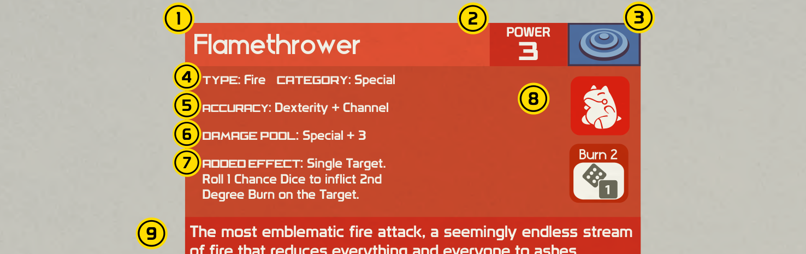

- 招式名稱：招式的正式名稱。聯盟規定下達指令時要使用這個名稱。
- 招式威力：如果招式能造成戰鬥傷害，威力就標在這裡。威力從 1 到 10，不過有些招式沒有固定的威力。
- 類別圖示：招式分為三種類別：物理、特殊和變化。
- 屬性與類別標籤：所有招式都以顏色區分，你也可以在這裡確認招式的屬性和類別。
- 命中骰：所有招式都需要命中骰才能順利使出。每個招式都會寫明使用哪個能力值或副能力值。
- 傷害骰池：造成傷害所需的能力值，加上招式的威力。這裡不包含其他傷害調整，例如屬性一致加成或擊中要害的額外骰，請看傷害骰池和傷害。
- 額外效果：除了招式的目標之外，大多數招式還有傷害以外的效果。請仔細閱讀每一條。
- 效果圖示：招式額外效果的快速視覺提示。
- 風味文字：對招式的描述或註解，讓你了解招式的作用、運作方式或帶給人的感覺。在戰鬥內外都試著為寶可夢的招式想出有創意的用法吧！